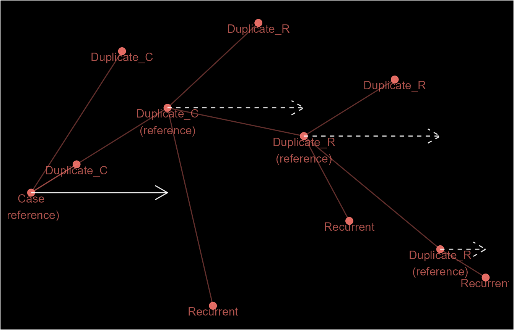
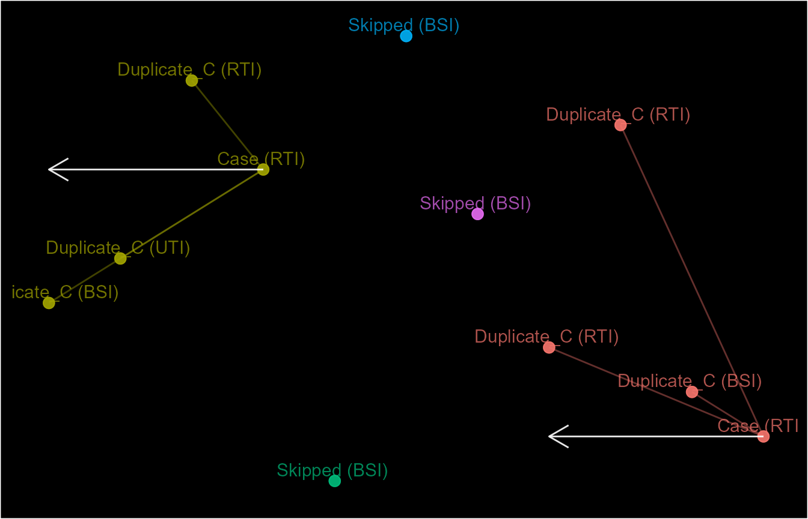
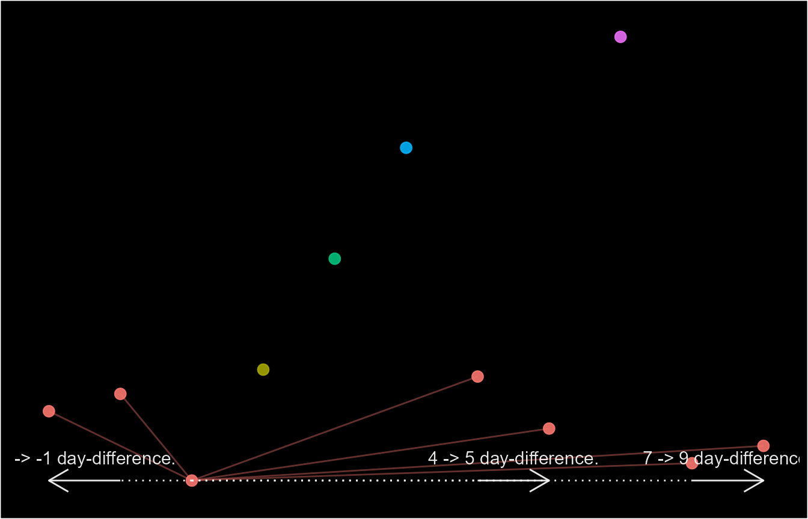
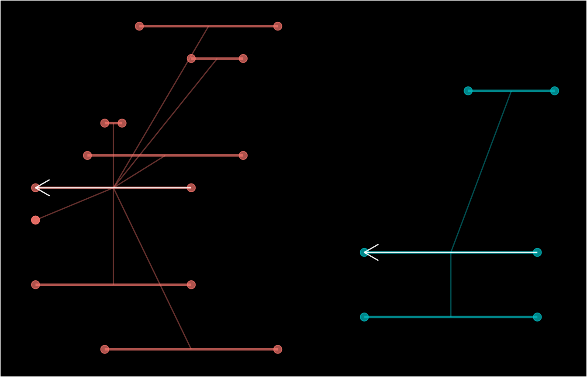
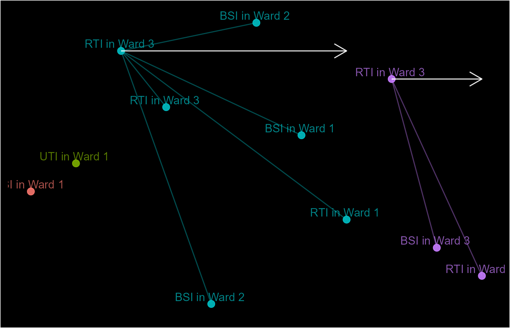
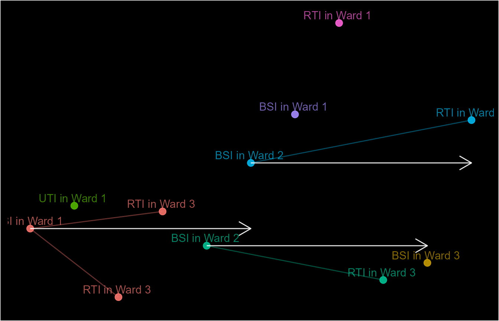
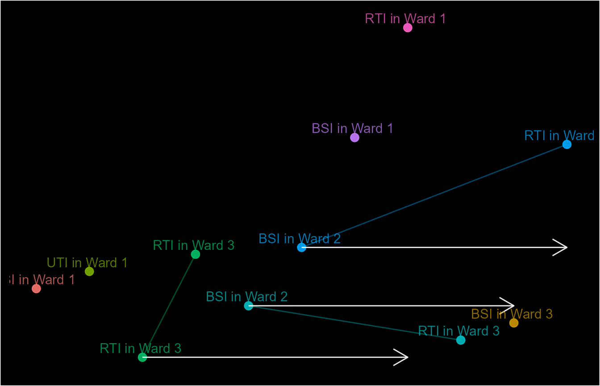

Introduction to epidemiological case definitions with diyar
01 November 2023
Source:vignettes/episodes.Rmd
episodes.RmdIn epidemiological analyses an exact distinction between temporal events is not always possible. Therefore, static but reasonable cut-offs are used to distinguish one occurrence of an event from another. This is an important aspect of most case definitions. For example, distinguishing repeat or recurrent infections from the first occurrence of that infection.
This vignette provides a brief introduction to how this is done with
episodes().
We begin by reviewing event_dt below. This is a sample
dataset of 11 infection events and includes data on the location and
type of infection.
event_dt <- seq(from = as.Date("2021-01-01"), to = as.Date("2021-01-11"), by = 1)
event_dt <- data.frame(date = event_dt)
event_dt$attr_1 <- c("BSI", "UTI", "RTI", "RTI", "BSI", "BSI", "BSI", "RTI", "RTI", "BSI", "RTI")
event_dt$attr_2 <- c("Ward 1", "Ward 1", "Ward 3", "Ward 3", "Ward 2", "Ward 2",
"Ward 1", "Ward 1", "Ward 3","Ward 3", "Ward 2")
event_dt
#> date attr_1 attr_2
#> 1 2021-01-01 BSI Ward 1
#> 2 2021-01-02 UTI Ward 1
#> 3 2021-01-03 RTI Ward 3
#> 4 2021-01-04 RTI Ward 3
#> 5 2021-01-05 BSI Ward 2
#> 6 2021-01-06 BSI Ward 2
#> 7 2021-01-07 BSI Ward 1
#> 8 2021-01-08 RTI Ward 1
#> 9 2021-01-09 RTI Ward 3
#> 10 2021-01-10 BSI Ward 3
#> 11 2021-01-11 RTI Ward 2The simplest kind of case definitions are those where only one event
is retained making every other event a duplicate (D) of the
index event (C).
event_dt$ep1 <- episodes(event_dt$date, episode_type = "fixed")
event_dt
#> date attr_1 attr_2 ep1
#> 1 2021-01-01 BSI Ward 1 E.1 2021-01-01 -> 2021-01-11 (C)
#> 2 2021-01-02 UTI Ward 1 E.1 2021-01-01 -> 2021-01-11 (D)
#> 3 2021-01-03 RTI Ward 3 E.1 2021-01-01 -> 2021-01-11 (D)
#> 4 2021-01-04 RTI Ward 3 E.1 2021-01-01 -> 2021-01-11 (D)
#> 5 2021-01-05 BSI Ward 2 E.1 2021-01-01 -> 2021-01-11 (D)
#> 6 2021-01-06 BSI Ward 2 E.1 2021-01-01 -> 2021-01-11 (D)
#> 7 2021-01-07 BSI Ward 1 E.1 2021-01-01 -> 2021-01-11 (D)
#> 8 2021-01-08 RTI Ward 1 E.1 2021-01-01 -> 2021-01-11 (D)
#> 9 2021-01-09 RTI Ward 3 E.1 2021-01-01 -> 2021-01-11 (D)
#> 10 2021-01-10 BSI Ward 3 E.1 2021-01-01 -> 2021-01-11 (D)
#> 11 2021-01-11 RTI Ward 2 E.1 2021-01-01 -> 2021-01-11 (D)As seen above, we can use episodes() to create a group
identifier unique to each occurrence. Each group is referred to as an
episode. The identifier is stored as an S4
(epid) class with useful information about each group in
its slots. These information can be accessed with
as.data.frame() or as.list().
We can build on this case definition by adding a temporal boundary within which events are considered part of the same occurrence. For example, we can specify that only events within 4 days (3 day-difference) of an index are considered part of the same occurrence.
event_dt$ep2 <- episodes(event_dt$date, 3, episode_type = "fixed")
event_dt
#> date attr_1 attr_2 ep1
#> 1 2021-01-01 BSI Ward 1 E.1 2021-01-01 -> 2021-01-11 (C)
#> 2 2021-01-02 UTI Ward 1 E.1 2021-01-01 -> 2021-01-11 (D)
#> 3 2021-01-03 RTI Ward 3 E.1 2021-01-01 -> 2021-01-11 (D)
#> 4 2021-01-04 RTI Ward 3 E.1 2021-01-01 -> 2021-01-11 (D)
#> 5 2021-01-05 BSI Ward 2 E.1 2021-01-01 -> 2021-01-11 (D)
#> 6 2021-01-06 BSI Ward 2 E.1 2021-01-01 -> 2021-01-11 (D)
#> 7 2021-01-07 BSI Ward 1 E.1 2021-01-01 -> 2021-01-11 (D)
#> 8 2021-01-08 RTI Ward 1 E.1 2021-01-01 -> 2021-01-11 (D)
#> 9 2021-01-09 RTI Ward 3 E.1 2021-01-01 -> 2021-01-11 (D)
#> 10 2021-01-10 BSI Ward 3 E.1 2021-01-01 -> 2021-01-11 (D)
#> 11 2021-01-11 RTI Ward 2 E.1 2021-01-01 -> 2021-01-11 (D)
#> ep2
#> 1 E.1 2021-01-01 -> 2021-01-04 (C)
#> 2 E.1 2021-01-01 -> 2021-01-04 (D)
#> 3 E.1 2021-01-01 -> 2021-01-04 (D)
#> 4 E.1 2021-01-01 -> 2021-01-04 (D)
#> 5 E.5 2021-01-05 -> 2021-01-08 (C)
#> 6 E.5 2021-01-05 -> 2021-01-08 (D)
#> 7 E.5 2021-01-05 -> 2021-01-08 (D)
#> 8 E.5 2021-01-05 -> 2021-01-08 (D)
#> 9 E.9 2021-01-09 -> 2021-01-11 (C)
#> 10 E.9 2021-01-09 -> 2021-01-11 (D)
#> 11 E.9 2021-01-09 -> 2021-01-11 (D)We can see that every event after the fourth day has now been
assigned to a different episode, each with its own index event. This
type of episode is referred to as a "fixed" episode.
episodes() can also produce "rolling"
(recurring) episodes. See examples of each below.
event_dt$ep3 <- episodes(event_dt$date, 3, episode_type = "rolling")
event_dt$ep4 <- episodes(event_dt$date, 3,
episode_type = "rolling", reference_event = "all_record")
event_dt
#> date attr_1 attr_2 ep1
#> 1 2021-01-01 BSI Ward 1 E.1 2021-01-01 -> 2021-01-11 (C)
#> 2 2021-01-02 UTI Ward 1 E.1 2021-01-01 -> 2021-01-11 (D)
#> 3 2021-01-03 RTI Ward 3 E.1 2021-01-01 -> 2021-01-11 (D)
#> 4 2021-01-04 RTI Ward 3 E.1 2021-01-01 -> 2021-01-11 (D)
#> 5 2021-01-05 BSI Ward 2 E.1 2021-01-01 -> 2021-01-11 (D)
#> 6 2021-01-06 BSI Ward 2 E.1 2021-01-01 -> 2021-01-11 (D)
#> 7 2021-01-07 BSI Ward 1 E.1 2021-01-01 -> 2021-01-11 (D)
#> 8 2021-01-08 RTI Ward 1 E.1 2021-01-01 -> 2021-01-11 (D)
#> 9 2021-01-09 RTI Ward 3 E.1 2021-01-01 -> 2021-01-11 (D)
#> 10 2021-01-10 BSI Ward 3 E.1 2021-01-01 -> 2021-01-11 (D)
#> 11 2021-01-11 RTI Ward 2 E.1 2021-01-01 -> 2021-01-11 (D)
#> ep2 ep3
#> 1 E.1 2021-01-01 -> 2021-01-04 (C) E.1 2021-01-01 -> 2021-01-11 (C)
#> 2 E.1 2021-01-01 -> 2021-01-04 (D) E.1 2021-01-01 -> 2021-01-11 (D)
#> 3 E.1 2021-01-01 -> 2021-01-04 (D) E.1 2021-01-01 -> 2021-01-11 (D)
#> 4 E.1 2021-01-01 -> 2021-01-04 (D) E.1 2021-01-01 -> 2021-01-11 (D)
#> 5 E.5 2021-01-05 -> 2021-01-08 (C) E.1 2021-01-01 -> 2021-01-11 (R)
#> 6 E.5 2021-01-05 -> 2021-01-08 (D) E.1 2021-01-01 -> 2021-01-11 (D)
#> 7 E.5 2021-01-05 -> 2021-01-08 (D) E.1 2021-01-01 -> 2021-01-11 (D)
#> 8 E.5 2021-01-05 -> 2021-01-08 (D) E.1 2021-01-01 -> 2021-01-11 (R)
#> 9 E.9 2021-01-09 -> 2021-01-11 (C) E.1 2021-01-01 -> 2021-01-11 (D)
#> 10 E.9 2021-01-09 -> 2021-01-11 (D) E.1 2021-01-01 -> 2021-01-11 (D)
#> 11 E.9 2021-01-09 -> 2021-01-11 (D) E.1 2021-01-01 -> 2021-01-11 (R)
#> ep4
#> 1 E.1 2021-01-01 -> 2021-01-11 (C)
#> 2 E.1 2021-01-01 -> 2021-01-11 (D)
#> 3 E.1 2021-01-01 -> 2021-01-11 (D)
#> 4 E.1 2021-01-01 -> 2021-01-11 (D)
#> 5 E.1 2021-01-01 -> 2021-01-11 (R)
#> 6 E.1 2021-01-01 -> 2021-01-11 (D)
#> 7 E.1 2021-01-01 -> 2021-01-11 (D)
#> 8 E.1 2021-01-01 -> 2021-01-11 (R)
#> 9 E.1 2021-01-01 -> 2021-01-11 (D)
#> 10 E.1 2021-01-01 -> 2021-01-11 (D)
#> 11 E.1 2021-01-01 -> 2021-01-11 (R)Here, we see the creation (or rather categorisation) of recurrent
events (R). These are recurrence of index events as opposed
to their duplicates. For example, ep3 initially ends on
2021-01-04. However, for rolling and recursive episodes,
the function takes the additional step of looking for other events
within 4 days of 2021-01-04. Records within this period are
then categorised as recurrent events of the 2021-01-04
event, which itself is a duplicate of the 2021-01-01 event.
This chaining process continues indefinitely until there are no more
events within the period of recurrence or it’s stop by the
rolls_max argument.
Even though ep1 has the same outcome (one episode) as
ep3 and ep4, they are very different case
definitions hence, the structure of their episodes are different. This
is demonstrated below by using schema() to visualise the
identifiers.

You may have noticed that this process starts from the earliest event
and proceeds forward in time. If the from_last argument is
changed, the process will happen in the opposite direction.
event_dt$ep5 <- episodes(event_dt$date, 3, episode_type = "rolling", from_last = TRUE)
event_dt
#> date attr_1 attr_2 ep1
#> 1 2021-01-01 BSI Ward 1 E.1 2021-01-01 -> 2021-01-11 (C)
#> 2 2021-01-02 UTI Ward 1 E.1 2021-01-01 -> 2021-01-11 (D)
#> 3 2021-01-03 RTI Ward 3 E.1 2021-01-01 -> 2021-01-11 (D)
#> 4 2021-01-04 RTI Ward 3 E.1 2021-01-01 -> 2021-01-11 (D)
#> 5 2021-01-05 BSI Ward 2 E.1 2021-01-01 -> 2021-01-11 (D)
#> 6 2021-01-06 BSI Ward 2 E.1 2021-01-01 -> 2021-01-11 (D)
#> 7 2021-01-07 BSI Ward 1 E.1 2021-01-01 -> 2021-01-11 (D)
#> 8 2021-01-08 RTI Ward 1 E.1 2021-01-01 -> 2021-01-11 (D)
#> 9 2021-01-09 RTI Ward 3 E.1 2021-01-01 -> 2021-01-11 (D)
#> 10 2021-01-10 BSI Ward 3 E.1 2021-01-01 -> 2021-01-11 (D)
#> 11 2021-01-11 RTI Ward 2 E.1 2021-01-01 -> 2021-01-11 (D)
#> ep2 ep3
#> 1 E.1 2021-01-01 -> 2021-01-04 (C) E.1 2021-01-01 -> 2021-01-11 (C)
#> 2 E.1 2021-01-01 -> 2021-01-04 (D) E.1 2021-01-01 -> 2021-01-11 (D)
#> 3 E.1 2021-01-01 -> 2021-01-04 (D) E.1 2021-01-01 -> 2021-01-11 (D)
#> 4 E.1 2021-01-01 -> 2021-01-04 (D) E.1 2021-01-01 -> 2021-01-11 (D)
#> 5 E.5 2021-01-05 -> 2021-01-08 (C) E.1 2021-01-01 -> 2021-01-11 (R)
#> 6 E.5 2021-01-05 -> 2021-01-08 (D) E.1 2021-01-01 -> 2021-01-11 (D)
#> 7 E.5 2021-01-05 -> 2021-01-08 (D) E.1 2021-01-01 -> 2021-01-11 (D)
#> 8 E.5 2021-01-05 -> 2021-01-08 (D) E.1 2021-01-01 -> 2021-01-11 (R)
#> 9 E.9 2021-01-09 -> 2021-01-11 (C) E.1 2021-01-01 -> 2021-01-11 (D)
#> 10 E.9 2021-01-09 -> 2021-01-11 (D) E.1 2021-01-01 -> 2021-01-11 (D)
#> 11 E.9 2021-01-09 -> 2021-01-11 (D) E.1 2021-01-01 -> 2021-01-11 (R)
#> ep4 ep5
#> 1 E.1 2021-01-01 -> 2021-01-11 (C) E.11 2021-01-11 <- 2021-01-01 (R)
#> 2 E.1 2021-01-01 -> 2021-01-11 (D) E.11 2021-01-11 <- 2021-01-01 (D)
#> 3 E.1 2021-01-01 -> 2021-01-11 (D) E.11 2021-01-11 <- 2021-01-01 (D)
#> 4 E.1 2021-01-01 -> 2021-01-11 (D) E.11 2021-01-11 <- 2021-01-01 (R)
#> 5 E.1 2021-01-01 -> 2021-01-11 (R) E.11 2021-01-11 <- 2021-01-01 (D)
#> 6 E.1 2021-01-01 -> 2021-01-11 (D) E.11 2021-01-11 <- 2021-01-01 (D)
#> 7 E.1 2021-01-01 -> 2021-01-11 (D) E.11 2021-01-11 <- 2021-01-01 (R)
#> 8 E.1 2021-01-01 -> 2021-01-11 (R) E.11 2021-01-11 <- 2021-01-01 (D)
#> 9 E.1 2021-01-01 -> 2021-01-11 (D) E.11 2021-01-11 <- 2021-01-01 (D)
#> 10 E.1 2021-01-01 -> 2021-01-11 (D) E.11 2021-01-11 <- 2021-01-01 (D)
#> 11 E.1 2021-01-01 -> 2021-01-11 (R) E.11 2021-01-11 <- 2021-01-01 (C)We can now see that in ep5 the last record is now the
index of the episode.
So far, we’ve discussed the different type of episodes and the
direction of time in which they are tracked. The next important part of
the tracking process is the selection of index events. This determines
which record is used as the reference point when checking for other
events within its window of occurrence. By default, this will be the
earliest record from the direction of the tracking process but this can
be changed to a custom preference using the custom_sort
argument.
To demonstrate this, let’s preferentially use "RTI"
infection events as index events for episodes.
custom_pref <- ifelse(event_dt$attr_1 == "RTI", 1, 2)
event_dt$ep6 <- episodes(event_dt$date, 3, custom_sort = custom_pref,
skip_order = 1)
event_dt$ep7 <- episodes(event_dt$date, 3, custom_sort = custom_pref,
skip_order = 1, from_last = TRUE)
schema(event_dt$ep6, seed = 2, show_labels = c("length_arrow"),
custom_label = paste0(decode(event_dt$ep6@case_nm), " (", event_dt$attr_1, ")"))
schema(event_dt$ep7, seed = 2, show_labels = c("length_arrow"),
custom_label = paste0(decode(event_dt$ep7@case_nm), " (", event_dt$attr_1, ")"))
Another main aspect of the tracking process is the duration between
events. This is handled by the case_length and
recurrence_length arguments. A length of 3
means that events within 4 days (3-day difference) of the of the index
event will be linked together as part of the same occurrence. Note that
this is 4 days towards the direction of the tracking process therefore,
events in the opposite direction will not be considered. We can see this
above in the schema for ep6.
If records in both directions need to be considered, then a range can
be provided as shown with ep_8. Additionally, multiple
periods from the index event can be specified by providing a list of
lengths or ranges as shown in ep_9.
event_dt$ep8 <- episodes(event_dt$date, number_line(-3, 3), episode_type = "fixed",
custom_sort = custom_pref, skip_order = 1)
event_dt$ep9 <- episodes(event_dt$date, list(number_line(-2, -1),
number_line(4, 5),
number_line(7, 9)), episode_type = "fixed",
custom_sort = custom_pref,
skip_order = 1,
skip_if_b4_lengths = TRUE)
schema(event_dt$ep8, seed = 2, show_labels = c("length_arrow"),
custom_label = paste0(decode(event_dt$ep8@case_nm), " (", event_dt$attr_1, ")"))

It’s possible to track episodes among events with known start and end
points, instead of those occurring at a single point in time. It is
worth noting that the reference point for such events is their end
point. Therefore, using a case_length of 1
when working with such events is interpreted as 2 days (1-day
difference) after the end point of the interval. By default, other
events that occur on or after the start point but before the end point
of the index event will not be captured. If this is required, use
index_window() to get the range required to capture such
events, and supply it to the case_length or
recurrence_length arguments. See the examples below.
# Dummy data of hospital stays
data(hospital_admissions)
dfr <- hospital_admissions[c("admin_dt", "discharge_dt")]
dfr$admin_period <- number_line(dfr$admin_dt, dfr$discharge_dt)
# Group overlapping hospital stays
dfr$ep_len1 <- index_window(dfr$admin_period)
dfr$ep1 <- episodes(date = dfr$admin_period, case_length = dfr$ep_len1)
# Group overlapping hospital stays and those within 21 days of the end point of an index hospital stay
dfr$ep_len2 <- expand_number_line(index_window(dfr$admin_period), 20, "right")
dfr$ep2 <- episodes(date = dfr$admin_period, case_length = dfr$ep_len2)
dfr[c("admin_period", "ep_len1", "ep_len2", "ep1", "ep2")]
#> admin_period ep_len1 ep_len2 ep1
#> 1 2019-01-01 == 2019-01-01 0 == 0 0 -> 20 E.2 2019-01-01 -> 2019-01-15 (D)
#> 2 2019-01-01 -> 2019-01-10 -9 -> 0 -9 -> 20 E.2 2019-01-01 -> 2019-01-15 (C)
#> 3 2019-01-10 -> 2019-01-13 -3 -> 0 -3 -> 20 E.2 2019-01-01 -> 2019-01-15 (D)
#> 4 2019-01-05 -> 2019-01-06 -1 -> 0 -1 -> 20 E.2 2019-01-01 -> 2019-01-15 (D)
#> 5 2019-01-05 -> 2019-01-15 -10 -> 0 -10 -> 20 E.2 2019-01-01 -> 2019-01-15 (D)
#> 6 2019-01-07 -> 2019-01-15 -8 -> 0 -8 -> 20 E.2 2019-01-01 -> 2019-01-15 (D)
#> 7 2019-01-04 -> 2019-01-13 -9 -> 0 -9 -> 20 E.2 2019-01-01 -> 2019-01-15 (D)
#> 8 2019-01-20 -> 2019-01-30 -10 -> 0 -10 -> 20 E.8 2019-01-20 -> 2019-01-31 (C)
#> 9 2019-01-26 -> 2019-01-31 -5 -> 0 -5 -> 20 E.8 2019-01-20 -> 2019-01-31 (D)
#> 10 2019-01-01 -> 2019-01-10 -9 -> 0 -9 -> 20 E.2 2019-01-01 -> 2019-01-15 (D)
#> 11 2019-01-20 -> 2019-01-30 -10 -> 0 -10 -> 20 E.8 2019-01-20 -> 2019-01-31 (D)
#> ep2
#> 1 E.2 2019-01-01 -> 2019-01-31 (D)
#> 2 E.2 2019-01-01 -> 2019-01-31 (C)
#> 3 E.2 2019-01-01 -> 2019-01-31 (D)
#> 4 E.2 2019-01-01 -> 2019-01-31 (D)
#> 5 E.2 2019-01-01 -> 2019-01-31 (D)
#> 6 E.2 2019-01-01 -> 2019-01-31 (D)
#> 7 E.2 2019-01-01 -> 2019-01-31 (D)
#> 8 E.2 2019-01-01 -> 2019-01-31 (D)
#> 9 E.2 2019-01-01 -> 2019-01-31 (D)
#> 10 E.2 2019-01-01 -> 2019-01-31 (D)
#> 11 E.2 2019-01-01 -> 2019-01-31 (D)
schema(dfr$ep1, seed = 2, show_labels = "length_arrow")
schema(dfr$ep2, seed = 2, show_labels = "length_arrow")Currently, the diyar packages recognises 7 mutually
exclusive and 2 mutually inclusive ways a pair of intervals can overlap.
Please see vignette("number_line") for more details about
this. Using case_overlap_methods and
recurrence_overlap_methods, the episode tracking process
can be made to only capture intervals that overlap by specific methods.
See the example below.
# Wrapper function for a fixed episode
episodes_wf <- function(x){
epids <- episodes(date = dfr$admin_period,
sn = dfr$rd_id,
case_length = index_window(dfr$admin_period),
case_overlap_methods = x)
return(epids)
}
# Methods
methods <- list(
# Identical intervals
exact = "exact",
# Intervals with their start or end points within another
across = "across",
# Intervals with aligned start points
aligns_start = "aligns_start",
# Intervals with aligned end points
aligns_end = "aligns_end",
# Intervals with start points that align with the end point of another, and vice versa
chain = "chain",
# Intervals occurring completely within others
inbetween = "inbetween",
# A combination of `chain` and `inbetween` methods
cb1 = "chain|inbetween",
# A combination of `exact`, `chain` and `inbetween` methods
cb2 = "exact|chain|inbetween",
# A combination of `across`, `chain` and `aligns_end` methods
cb3 = "across|chain|aligns_end"
)
epids <- lapply(methods, episodes_wf)
names(epids) <- methods
# Use `schema()` to visualise each.
epids
#> $exact
#> [1] "E.1 2019-01-01 == 2019-01-01 (C)" "E.2 2019-01-01 -> 2019-01-10 (C)"
#> [3] "E.3 2019-01-10 -> 2019-01-13 (C)" "E.4 2019-01-05 -> 2019-01-06 (C)"
#> [5] "E.5 2019-01-05 -> 2019-01-15 (C)" "E.6 2019-01-07 -> 2019-01-15 (C)"
#> [7] "E.7 2019-01-04 -> 2019-01-13 (C)" "E.8 2019-01-20 -> 2019-01-30 (C)"
#> [9] "E.9 2019-01-26 -> 2019-01-31 (C)" "E.2 2019-01-01 -> 2019-01-10 (D)"
#> [11] "E.8 2019-01-20 -> 2019-01-30 (D)"
#>
#> $across
#> [1] "E.01 2019-01-01 == 2019-01-01 (C)" "E.02 2019-01-01 -> 2019-01-15 (C)"
#> [3] "E.03 2019-01-10 -> 2019-01-13 (C)" "E.04 2019-01-05 -> 2019-01-06 (C)"
#> [5] "E.02 2019-01-01 -> 2019-01-15 (D)" "E.02 2019-01-01 -> 2019-01-15 (D)"
#> [7] "E.02 2019-01-01 -> 2019-01-15 (D)" "E.08 2019-01-20 -> 2019-01-31 (C)"
#> [9] "E.08 2019-01-20 -> 2019-01-31 (D)" "E.10 2019-01-01 -> 2019-01-10 (C)"
#> [11] "E.11 2019-01-20 -> 2019-01-30 (C)"
#>
#> $aligns_start
#> [1] "E.02 2019-01-01 -> 2019-01-10 (D)" "E.02 2019-01-01 -> 2019-01-10 (C)"
#> [3] "E.03 2019-01-10 -> 2019-01-13 (C)" "E.05 2019-01-05 -> 2019-01-15 (D)"
#> [5] "E.05 2019-01-05 -> 2019-01-15 (C)" "E.06 2019-01-07 -> 2019-01-15 (C)"
#> [7] "E.07 2019-01-04 -> 2019-01-13 (C)" "E.08 2019-01-20 -> 2019-01-30 (C)"
#> [9] "E.09 2019-01-26 -> 2019-01-31 (C)" "E.10 2019-01-01 -> 2019-01-10 (C)"
#> [11] "E.11 2019-01-20 -> 2019-01-30 (C)"
#>
#> $aligns_end
#> [1] "E.01 2019-01-01 == 2019-01-01 (C)" "E.02 2019-01-01 -> 2019-01-10 (C)"
#> [3] "E.07 2019-01-04 -> 2019-01-13 (D)" "E.04 2019-01-05 -> 2019-01-06 (C)"
#> [5] "E.05 2019-01-05 -> 2019-01-15 (C)" "E.05 2019-01-05 -> 2019-01-15 (D)"
#> [7] "E.07 2019-01-04 -> 2019-01-13 (C)" "E.08 2019-01-20 -> 2019-01-30 (C)"
#> [9] "E.09 2019-01-26 -> 2019-01-31 (C)" "E.10 2019-01-01 -> 2019-01-10 (C)"
#> [11] "E.11 2019-01-20 -> 2019-01-30 (C)"
#>
#> $chain
#> [1] "E.01 2019-01-01 == 2019-01-01 (C)" "E.02 2019-01-01 -> 2019-01-13 (C)"
#> [3] "E.02 2019-01-01 -> 2019-01-13 (D)" "E.04 2019-01-05 -> 2019-01-06 (C)"
#> [5] "E.05 2019-01-05 -> 2019-01-15 (C)" "E.06 2019-01-07 -> 2019-01-15 (C)"
#> [7] "E.07 2019-01-04 -> 2019-01-13 (C)" "E.08 2019-01-20 -> 2019-01-30 (C)"
#> [9] "E.09 2019-01-26 -> 2019-01-31 (C)" "E.10 2019-01-01 -> 2019-01-10 (C)"
#> [11] "E.11 2019-01-20 -> 2019-01-30 (C)"
#>
#> $inbetween
#> [1] "E.01 2019-01-01 == 2019-01-01 (C)" "E.02 2019-01-01 -> 2019-01-10 (C)"
#> [3] "E.05 2019-01-05 -> 2019-01-15 (D)" "E.02 2019-01-01 -> 2019-01-10 (D)"
#> [5] "E.05 2019-01-05 -> 2019-01-15 (C)" "E.06 2019-01-07 -> 2019-01-15 (C)"
#> [7] "E.07 2019-01-04 -> 2019-01-13 (C)" "E.08 2019-01-20 -> 2019-01-30 (C)"
#> [9] "E.09 2019-01-26 -> 2019-01-31 (C)" "E.10 2019-01-01 -> 2019-01-10 (C)"
#> [11] "E.11 2019-01-20 -> 2019-01-30 (C)"
#>
#> $`chain|inbetween`
#> [1] "E.01 2019-01-01 == 2019-01-01 (C)" "E.02 2019-01-01 -> 2019-01-13 (C)"
#> [3] "E.02 2019-01-01 -> 2019-01-13 (D)" "E.02 2019-01-01 -> 2019-01-13 (D)"
#> [5] "E.05 2019-01-05 -> 2019-01-15 (C)" "E.06 2019-01-07 -> 2019-01-15 (C)"
#> [7] "E.07 2019-01-04 -> 2019-01-13 (C)" "E.08 2019-01-20 -> 2019-01-30 (C)"
#> [9] "E.09 2019-01-26 -> 2019-01-31 (C)" "E.10 2019-01-01 -> 2019-01-10 (C)"
#> [11] "E.11 2019-01-20 -> 2019-01-30 (C)"
#>
#> $`exact|chain|inbetween`
#> [1] "E.1 2019-01-01 == 2019-01-01 (C)" "E.2 2019-01-01 -> 2019-01-13 (C)"
#> [3] "E.2 2019-01-01 -> 2019-01-13 (D)" "E.2 2019-01-01 -> 2019-01-13 (D)"
#> [5] "E.5 2019-01-05 -> 2019-01-15 (C)" "E.6 2019-01-07 -> 2019-01-15 (C)"
#> [7] "E.7 2019-01-04 -> 2019-01-13 (C)" "E.8 2019-01-20 -> 2019-01-30 (C)"
#> [9] "E.9 2019-01-26 -> 2019-01-31 (C)" "E.2 2019-01-01 -> 2019-01-13 (D)"
#> [11] "E.8 2019-01-20 -> 2019-01-30 (D)"
#>
#> $`across|chain|aligns_end`
#> [1] "E.01 2019-01-01 == 2019-01-01 (C)" "E.02 2019-01-01 -> 2019-01-15 (C)"
#> [3] "E.02 2019-01-01 -> 2019-01-15 (D)" "E.04 2019-01-05 -> 2019-01-06 (C)"
#> [5] "E.02 2019-01-01 -> 2019-01-15 (D)" "E.02 2019-01-01 -> 2019-01-15 (D)"
#> [7] "E.02 2019-01-01 -> 2019-01-15 (D)" "E.08 2019-01-20 -> 2019-01-31 (C)"
#> [9] "E.08 2019-01-20 -> 2019-01-31 (D)" "E.10 2019-01-01 -> 2019-01-10 (C)"
#> [11] "E.11 2019-01-20 -> 2019-01-30 (C)"See overlap_methods$options for a list of supported
options.
Additional matching criteria (separate from temporal links) can be
implemented by passing a sub_criteria object to the
case_sub_criteria and recurrence_sub_criteria
arguments. See the vignette("links") for more details about
sub_criteria objects. In the example below, we specify that
only index events that are an RTI or occurred in Ward 3 can start an
episode.
match_funx1 <- function(x, y) y == "RTI"
match_funx2 <- function(x, y) y == "Ward 2"
# Sub-criteria 1 - Matching source of infection OR patient location
sub_cri_1 <- sub_criteria(event_dt$attr_1, event_dt$attr_2,
operator = "or",
match_funcs = c(match_funx1, match_funx2))
event_dt$ep10 <- episodes(event_dt$date, case_length = 5, case_sub_criteria = sub_cri_1)
schema(event_dt$ep10, seed = 2, show_labels = c("length_arrow"),
custom_label = paste0(event_dt$attr_1, " in ", event_dt$attr_2))
Alternatively, we can specify that BSI events or those that occurred
in Ward 1 should not be linked to any episode. Note that they will be
able to start episodes unless specified otherwise (y) as
with event_dt$ep10.
match_funx3 <- function(x, y) !(x$attr_1 == "BSI" | x$attr_2 == "Ward 1")
equal_funx <- function(x, y) TRUE
# Sub-criteria 1 - Matching source of infection OR patient location
sub_cri_2 <- sub_criteria(attrs(attr_1 = event_dt$attr_1,
attr_2 = event_dt$attr_2),
operator = "and",
match_funcs = match_funx3,
equal_funcs = equal_funx)
event_dt$ep11 <- episodes(event_dt$date, case_length = 5, case_sub_criteria = sub_cri_2)
schema(event_dt$ep11, seed = 2, show_labels = c("length_arrow"),
custom_label = paste0(event_dt$attr_1, " in ", event_dt$attr_2))
We can even combine both conditions into a nested condition.
combined_sub_cri <- sub_criteria(sub_cri_1, sub_cri_2, operator = "and")
event_dt$ep12 <- episodes(event_dt$date, case_length = 5,
case_sub_criteria = combined_sub_cri)
schema(event_dt$ep12, seed = 2, show_labels = c("length_arrow"),
custom_label = paste0(event_dt$attr_1, " in ", event_dt$attr_2))
A sub_criteria can be very useful when complex rules are
required as part of the case definition.
Finally, everything we’ve just discussed can be done separately for
different subsets of the dataset by using the strata
argument. data_source lets us keep track of the source of
records in each episode. data_links places limits on
episode creation based on their data_source. The
group_stats argument creates useful information for each
episode which are stored in the epid object. To demonstrate
these, we’ll modify our first example.
event_dt$ep13 <- episodes(event_dt$date, episode_type = "fixed",
strata = event_dt$attr_2, data_source = event_dt$attr_1,
group_stats = TRUE)
as.data.frame(event_dt$ep13)
#> epid sn case_nm dist_wind_index dist_epid_index epid_length epid_total
#> 1 1 1 Case 0 days 0 days 7 days 4
#> 2 1 2 Duplicate_C 1 days 1 days 7 days 4
#> 3 3 3 Case 0 days 0 days 7 days 4
#> 4 3 4 Duplicate_C 1 days 1 days 7 days 4
#> 5 5 5 Case 0 days 0 days 6 days 3
#> 6 5 6 Duplicate_C 1 days 1 days 6 days 3
#> 7 1 7 Duplicate_C 6 days 6 days 7 days 4
#> 8 1 8 Duplicate_C 7 days 7 days 7 days 4
#> 9 3 9 Duplicate_C 6 days 6 days 7 days 4
#> 10 3 10 Duplicate_C 7 days 7 days 7 days 4
#> 11 5 11 Duplicate_C 6 days 6 days 6 days 3
#> epid_dataset iteration wind_id1 wind_nm1 epid_start epid_end
#> 1 BSI,RTI,UTI 1 1 Case 2021-01-01 2021-01-08
#> 2 BSI,RTI,UTI 1 1 Case 2021-01-01 2021-01-08
#> 3 BSI,RTI 1 3 Case 2021-01-03 2021-01-10
#> 4 BSI,RTI 1 3 Case 2021-01-03 2021-01-10
#> 5 BSI,RTI 1 5 Case 2021-01-05 2021-01-11
#> 6 BSI,RTI 1 5 Case 2021-01-05 2021-01-11
#> 7 BSI,RTI,UTI 1 1 Case 2021-01-01 2021-01-08
#> 8 BSI,RTI,UTI 1 1 Case 2021-01-01 2021-01-08
#> 9 BSI,RTI 1 3 Case 2021-01-03 2021-01-10
#> 10 BSI,RTI 1 3 Case 2021-01-03 2021-01-10
#> 11 BSI,RTI 1 5 Case 2021-01-05 2021-01-11